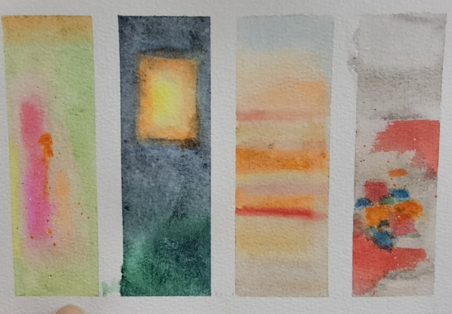

色彩艺术
Contents
色彩艺术#
- ISBN
9787571414672
- 开始于
伊顿
序言#
色彩艺术的历史演变#
印象主义光线在大气中的变化
点彩派混合的颜料会破坏色彩的力量，色彩应该由纯色的点元素经过观赏者的眼睛混合起来
野兽派放弃了色彩调和的画法，回到了一主观感受的，平衡为主的简单明亮的色块涂抹形式
立体主义运用不同的色彩来表达画面的明暗度
🧑🎨表现主义恢复绘画的精神内涵 不和谐的色彩的表现性
青骑士📖青骑士通过形状和色彩来表现内在化和精神化的体验。被归类为
🧑🎨马克斯·贝克曼新具象艺术表现非客观的物质，通常是运用集合图形和纯粹的光谱色彩来表现，并伪装成真实的可以被辨认的有形物质
超现实主义以现实作为媒介，为「非现实」的画作增添真实感
塔希主义另类、怪异的色彩和形式
重要的研究课题#
尽管色彩的研究可以分为很多方面（物理、化学、生理、心理、艺术），对于色彩艺术的初学者来说，最重要的是后三个方面。
色彩的物理性质#
待处理
买 三棱镜、小米智能 LED 灯
关于太阳#
太阳是什么颜色的？#
1976 年，艾萨克牛顿爵士 使用三棱镜将 白色 的太阳光分解出一系列的光谱色系……
看到这段的时候我陷入了疑惑 —— 太阳，不是黄色的吗？
于是查阅了一番资料。太阳是白色的铁证来自于太空拍摄的照片：
而实际上在太阳光的光谱中，绿色的成分反而是最强的 1，但总的来说，太阳光在可见光谱的部分是相当均匀的。
人们对太阳是黄色甚至红色的误解来自于大气层：
蓝紫光容易被大气散射
人对日出和日落时刻的阳光的特别关注，此时大气对太阳的影响更大（斜射），因此看起来更
正午时刻的太阳其实已经非常接近白色了，但人不会去直接观察
唯太阳和人心不可直视#
17 日和 YY 在咖啡店，为了展示 色彩适应 的存在，盯着太阳看了好几秒，以求在视网膜上印出一个黄绿色的补偿影像。
警告
这是危险的行为，可能导致 光性角膜炎 或者 日光性视网膜病变 2
色彩物质与色彩效果#
色彩和谐#
主观性的色彩偏好#
伊顿进行过大量有关主观性色彩的实验，具体做法是让受试者自由地画出自认为和谐，舒服的色彩组合方案。
为了使这类实验获得成功，绘画和首先必须要对色彩有基本的敏感性。如果没有对调色进行过深入研究，没有用画笔和颜料进行过相应的实践，那么就无法获得可靠的结果。
—— P20
尽管如此，为了好玩，我还是和 YY 在没有经过调色训练的情况下做了一些色彩实验：
四季色卡#
用颜色来描述自己对四个季节的感受：
- 四季色卡#
-
 四季色卡#
YY 画的四季色卡。
- 春
春天和 YY 之前画的心境那张有些许相似，不知道是不是巧合
- 夏
夏天是夜空、树林和橙月。YY 说用了撒了盐表现夜跑时沁出的汗，虽然因为不熟悉材料没撒好，但一提到汗，和夏天有关的其他印象：急促的鼻息、昏黄的路灯，聒噪的虫鸣，也一并跟着涌现了
- 秋
秋天和春天一样短暂又流动
- 冬
YY 的冬天的没有太多大自然的介入，更多的是夜里亮起的星星和灯火
我们聊到「伤感的空气」，对她来说是「春天的鲜花和泥土香」。 YY 的大部分春天都在读书，春季往往是不得闲的期末，期末后又常常是离别。 今晚（22.05.05）又聊到，我说伤感是因为「太好了又捉不住」，话音缓缓落下后，又觉得说怎么会捉不住呢，其实应该都捉住啦。
我想起三毛写的 《春天不是读书天》，翻来重看了一遍，虽然和文章没什么关系，现在的 YY 春天也不用读书啦，就慢慢地过吧 可现在是夏天了诶。
{kind=link}
{kind=link}
印象试纸#
用颜色来描述对对方的主观印象：
{kind=link}
{kind=link}
{kind=link}
参考#
如果你有任何意见，请在此评论。 如果你留下了电子邮箱，我可能会通过 回复你。